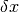
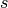
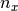

2.2. Numerical treatment of the drift diffusion Poisson equations¶
In this section we present the procedure followed to discretize the drift diffusion Poisson set of equations, the algorithm used to solve it and its implementation.
2.2.1. Scharfetter-Gummel scheme¶
To solve the drift diffusion Poisson equations numerically, we utilize a simple spatial discretization. Recall that densities are defined on sites, and fluxes (such as current flux, electric field flux) are defined on links. It’s important to note that sites and links in the discretized grid are fundamentally different objects, as shown in the figure below.
{kind=link}
We consider a one-dimensional system to illustrate the model discretization. First, we want to rewrite the currents in semi-discretized form
for link  (link connects discretized points and
(link connects discretized points and
 ):
):
(1)¶
Note that link indices are denoted with a superscript, while site indices are denoted with a subscript.
Next, a key step to ensure numerical stability is to integrate the above in order to get a completely discretized version of the current . This discretization is known as the Scharfetter-Gummel scheme [1]. First, rewrite the hole density in terms of the quasi-Fermi level.
It’s convenient to define . We plug this form of  into Eq. (1):
into Eq. (1):
next multiply both sides of
the hole current by , and integrate over link
(2)¶
Now we assume that  varies linearly between grid points,
varies linearly between grid points,
which enables the integral on the left hand side above to be performed:
(3)¶
Plugging Eq. (3) into Eq. (2) and solving for yields
(4)¶
Where . A similar procedure leads to the following expression for :
(5)¶
where .
2.2.2. Newton-Raphson algorithm¶
We want to write the continuity and Poisson equations in the form , and solve these coupled nonlinear equations by using root-finding algorithms. The appropriate form is given by:
These equations are the discretized drift-diffusion-Poisson equations to be solved for the variables , subject to the boundary conditions given in introduction.
We use a Newton-Raphson method to solve the above set of equations. The idea behind the method is clearest in a simple one-dimensional case as illustrated on the figure below. Given a general nonlinear function , we want to find its root . Given an initial guess , one can estimate the error  in this guess by assuming that the function varies linearly all the way to its root
(6)¶
An updated guess is provided by .
Schematic for the Newton-Raphson method for root finding.
In multiple dimensions the last term in Eq. (6) is replaced by the inverse of the Jacobian, which is the multi-dimensional generalization of the derivative. In this case, Eq. (6) is a matrix equation of the form:
where
Here is a small subset of the  matrix for our problem.
We have only explicitly shown the row which corresponds to (here we
drop the super/sub script convention set up to distinguish between
sites and links, for the sake of writing things more compactly):
matrix for our problem.
We have only explicitly shown the row which corresponds to (here we
drop the super/sub script convention set up to distinguish between
sites and links, for the sake of writing things more compactly):
(7)¶![\left(
\begin{array}{ccccccccccc}
& \ldots & & & & & & & & &\\
\vdots & & & & & & & & & & \\
& & & & & & & & & &\\
& & & & & & & & & &\\
\ldots & \frac{\partial f_n^i}{\partial E_{F_n}^{i-1}} & \frac{\partial
f_n^i}{\partial E_{F_p}^{i-1}} & \frac{\partial f_n^i}{\partial \phi^{i-1}}
& \frac{\partial f_n^i}{\partial E_{F_n}^{i}} & \frac{\partial
f_n^i}{\partial E_{F_p}^{i}} & \frac{\partial f_n^i}{\partial \phi^{i}} &
\frac{\partial f_n^i}{\partial E_{F_n}^{i+1}} & \frac{\partial
f_n^i}{\partial E_{F_p}^{i+1}} & \frac{\partial f_n^i}{\partial \phi^{i+1}} &
\ldots \\ \vdots & & & & & & & & & &\\
& & & & & & & & & &\\
& & & & & & & & & &\\
& & & & & & & & & &\\
& & & & & & & & & &\\
& \ldots & & & & & & & & &
\end{array}
\right)
\left(
\begin{array}{c}
\vdots\\
\delta E_{F_n}^{i-1} \\
\delta E_{F_p}^{i-1} \\
\delta \phi^{i-1} \\
\delta E_{F_n}^{i} \\
\delta E_{F_p}^{i} \\
\delta \phi^{i} \\
\delta E_{F_n}^{i+1} \\
\delta E_{F_p}^{i+1} \\
\delta \phi^{i+1} \\
\vdots
\end{array}
\right)
=
\left(
\begin{array}{c}
\vdots\\
f_n^{i-1} \\
f_p^{i-1} \\
f_v^{i-1} \\
f_n^{i} \\
f_p^{i} \\
f_v^{i} \\
f_n^{i+1} \\
f_p^{i+1} \\
f_v^{i+1} \\
\vdots
\end{array}
\right)](../_images/math/997250312a2064c2046165138a6ae45e45277122.png)
Note that for this problem, finding derivatives numerically leads to major convergence problems. We derived the derivatives and implemented them in the code for this reason.
2.2.3. Multi-dimensional implementation¶
We do the standard folding of the multi-dimensional index label into the single index label  of the sites of the system:
where  ( ) is the number of sites in the
) is the number of sites in the
 -direction (
-direction ( -direction).
-direction).
Using sparse matrix techniques is key fast to fast computation. We provide below
the number of non-zero elements in the Jacobian for periodic boundary conditions
in the - and  -directions.
-directions.
| Dimension | Number of stored values in the Jacobian |
|---|---|
| 1 | 19 (nx-2) + 20 |
| 2 | ny [29 (nx - 2) + 28] |
| 3 | ny nz [39 (nx - 2) + 36] |
By default the Newton correction is computed by a direct resolution of the system in Eq. (7). This is done using the default Scipy solver. We recommend using the MUMPS library instead, which yields faster performace. Note that for large systems, and especially for 3D problems, the memory and the computing time required by the direct methods aforementioned become so large that they are impractical. It is possible to use an iterative method to solve Eq. (7) in these cases.
References
| [1] |
|